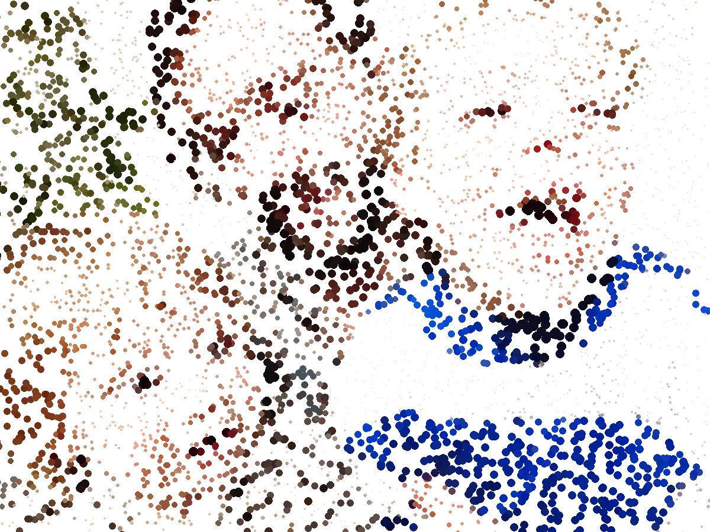

Jesses website voor de KUNSD
Maak kunst van je eigen foto's, met algoritmes die ik zelf in Python heb geschreven. Stippen, vormen, kleurplaten: upload een foto, kies een bewerking en download het resultaat.

Zo Werkt Het
- Kies Een Foto Upload een foto en snijd hem eventueel bij. Een portret of een kleurrijke foto werkt het best.
- Kies Een Bewerking Alleen een mooi plaatje, of iets om na het printen zelf mee aan de slag te gaan, zoals een kleurplaat met nummers.
- Download En Print Bekijk het resultaat, speel met de instellingen en download je eigen kunstwerk.
Altijd In Ontwikkeling
KUNSD is mijn hobbyproject en groeit stap voor stap. Ik ben data scientist en vind het mooi om met code iets te maken dat je kunt ophangen of inkleuren. Elk algoritme begint als een experiment op mijn laptop; de beste komen hier terecht, zodat jij ze ook kunt gebruiken.
Er komen dus regelmatig nieuwe bewerkingen bij, en bestaande worden beter. Op mijn lijstje staan onder andere rechte lijnen en puzzelstukjes.
Werkt iets niet zoals je verwacht, of heb je een idee voor een nieuwe bewerking? Dan hoor ik dat graag via de contactpagina.